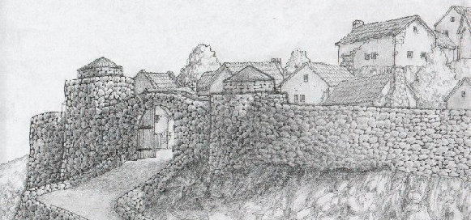
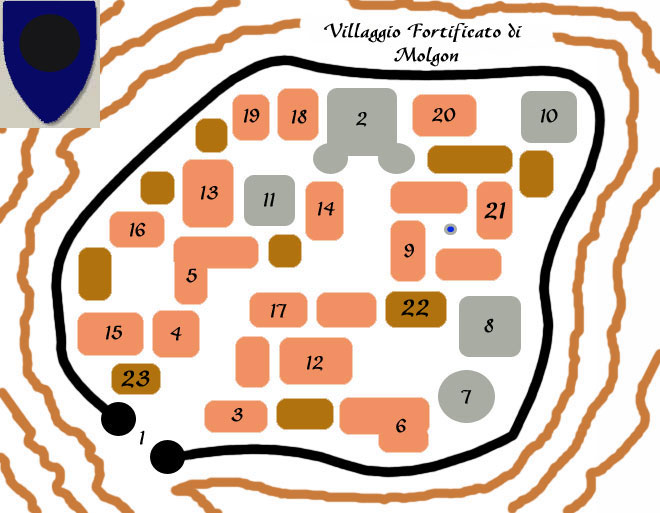

1) Porta del villaggio: Il villaggio di Molgon è una piccola cittadella fortificata. Le mura di cinta, costruite in pietra massiccia sono alte 6 metri e sono calpestabili. Per salire e per scendere dalle mura l'unico accesso è costituito dai due torrioni difensivi all'ingresso della cittadella. Si tratta di due torri alte 9 metri e larghe 6 metri nelle quali sono presenti gli alloggiamenti dei soldati che si occupano della difesa della cittadella. Ogni torre è sotto il controllo e la gestione di un Alto Comandante Militare (Galnesh Mutron, fighter 6° livello di esperienza e Serkos Auder, fighter 5° livello di esperienza) il quale ha il dovere di occuparsi (a turno con quello dell'altra torre) sia della difesa della cittadella dai pericoli esterni che del portale d'ingresso e dell'accesso alla cittadella. In ogni torre, dunque, sono presenti anche due Comandanti Militari (guerrieri del 3° o 4° livello di esperienza) che, seguendo gli ordine dei Alti Comandanti comandano, ognuno, due pattuglie di soldati con alla guida un Capitano (guerriero di 1° o 2° livello di esperienza). La difesa della cittadella è quindi affidata ad otto pattuglie, ognuna delle quali è composta da 10 uomini, ossia 5 soldati scelti, balestrieri (balestra leggera, cuoio rinforzata ed ascia ad una mano) e 5 soldati, fanti pesanti (cotta a scaglie, scudo ed ascia ad una mano). Le pattuglie si alternano alla guardia delle mura del villaggio, in particolare tre pattuglie prendono posizione sulle mura (guardano tenendo sotto osservazione la valle circostante ed anche l'interno del villaggio) mentre una pattuglia è sempre alle porte del villaggio. Il grande portale a due ante, di legno massiccio e rinforzato in ferro con grossi spuntoni, è altro 4 metri ed è aperto ogni mattina all'alba (6.30) e chiuso al crepuscolo (21.00). Come stabilisce l'editto nobiliare della baronia, per lasciare la cittadella o per entrare quando le porte sono chiuse occorre essere autorizzati almeno da un decreto ufficiale rilasciato da uno dei due Alti Comandanti Militari dei torrioni. Costoro, inoltre, sempre con decreto ufficiale possono impedire l'accesso alla cittadella od ordinare la chiusura o l'apertura delle porte in momenti diversi da quelli usuali. Alle dipendenze degli Alti Comandanti si trovano anche 4 scrivani che hanno il compito di segnare sul registro chiamato "libro dell'accesso alla cittadella" chi entra ed esce dalla stessa e le eventuali note (motivi del viaggio, risultanza delle ispezioni) che il Capitano di stanza alla porta vuole fare aggiungere. Normalmente, per i residenti, non vi sono particolari formalità mentre gli stranieri (o in ogni caso qualora si entra od esca con merci oppure in modo sospetto) sono sottoposti dal Capitano di stanza ad un piccolo interrogatorio e nel caso ad un'ispezione personale.
2) La
Rocca delle Guardie: Il villaggio di Molgon è sempre stato governato da
un membro della famiglia del Barone della Lunga Notte diverso dal Barone stesso,
che per l'importanza dell'incarico assume il titolo di nobile non territoriale.
Attualmente il Governatore di Molgon è il Nobile Treifor della Lunga
Notte,
cugino di primo grado del Barone, il quale è al vertice del comando sia delle
truppe militari di stanza nelle torri di ingresso che di tutte le guardie
cittadine. Treifor ha seguito la tradizione guerriera della sua famiglia
avanzando ufficialmente fino all'8° livello della classe fighter. Costui, che può emanare
editti ufficiali di più alto grado che
riguardino Molgon e la valle sottostante, vive in questo maschio fortificato,
dove vi sono le stanze personali della propria famiglia e le sale di
ricevimento. Nella rocca si trovano anche le guardie cittadine (che seguono
l'organizzazione della guardia imperiale). Tutte le guardie cittadine sono
comandate dal Primo Ufficiale della Guardia (il
Sublime Breton Kras,
guerriero di 7° livello di esperienza). Al suo comando vi è l'Alto
Ufficiale della Guardia Cittadina (il Sublime
Zerkon Varas, guerriero del 5° livello di esperienza) e 15
pattuglie di guardia ognuna comandata da un capo pattuglia. Sette delle
pattuglie hanno il compito di mantenere l'ordine pubblico nella cittadella (2
sono di stanza alla gendarmeria e le altre 5 si alternano nel villaggio). Queste
sono composte da 6 guardie, fanti leggeri (cuoio rinforzata, alabarda, ed
accetta da mano) e 4 guardie scelte, balestrieri (balestra leggera, cuoio
rinforzata ed ascia ad una mano). Le altre otto pattuglie, guidate dai capi
pattuglia più esperti, invece, sono composte da 8 guardie scelte, cavalleria
media (light war horse, cotta a scaglie, scudo ed ascia ad una mano) e si
alternano a pattugliare le zone circostanti al villaggio (ogni giorno 4 di
queste pattuglie lasciano all'alba Molgon per fare rientro al
crepuscolo).
Il Governatore di Molgon ha al suo seguito
una piccola corte, fra costoro vi sono i più importanti amministratori della
comunità che svolgono il ruolo di consiglieri e ministri (tutti possono emanare
decreti ufficiali nell'ambito di loro competenza). La Corte è composta da:
Sublime Zigaar Sorn, mago rinnegato del 7° livello
di esperienza, esperto in magie di summonazione e di divinazione. Costui si
occupa della controllo e della gestione della magia
a Molgon rivestendo il ruolo di Alto Ufficiale delle
Scienze e della Magia per la zona di Molgon e la sua provincia.
Sublime Larkar Mor, costui occupa il ruolo di ministro
degli interni di Molgon, gestendo un piccolo nucleo di "Ispettori
della Lunga Notte" che svolgono il ruolo di messi, informatori e
spie. La circolazione dei veleni, di acidi e di esplosivi e gestita da costui.
Sublime Savaras Nedris, tesoriere
di Molgon, si occupa delle gestione delle risorse cittadine ed è anche
il responsabile della Cassa della Lunga Notte. E'
al comando anche di un nucleo di "Ispettori Fiscali" che controllano
il regolare pagamento delle tasse.
La Corte si riunisce ufficialmente nella rocca una volta al mese.
3) La Foglia Miracolosa di Molgon: Si tratta della sede della corporazione degli Erboristi nonché di un un grosso rivenditore di prodotti d'erboristeria. L'attività degli erboristi nella Baronia è abbastanza articolata. Gli erboristi della Baronia sono riuniti in una corporazione chiamata "Radici della Lunga Notte" e costituiscono un potere economico di discrete dimensioni. La corporazione è dotata, presso il villaggio di Borgo del Toro, di una spaziosa serra e di un grande laboratorio (fornito di tutti gli strumenti) che sono comuni ed utilizzabili gratuitamente da parte di tutti gli iscritti (se si vuole vitto ed alloggio si può pernottare, esclusivamente per il periodo in cui si utilizza il laboratorio al costo di 4 scuri al giorno con una pensione completa di scarsa qualità). Gli iscritti alla corporazione si impegnano, però a vendere i loro prodotti finiti e/o le loro piante esclusivamente alla corporazione al 75% del loro valore medio di mercato. Costoro possono vendere liberamente i loro prodotti solo all'esterno della Baronia e sempre che non abbiano utilizzato la serra o il laboratorio comune per prepararli. La corporazione poi rivende al dettaglio questi prodotti in questo edificio di Molgon. La corporazione organizza spesso, partendo da Molgon, giri delle colline per il recupero delle erbe con annessa scorta, a tali giri partecipano 3 - 4 erboristi. Ogni partecipante versa una quota alla corporazione pari ad 1 karso al giorno, la corporazione procura la scorta, provvede al vitto e al pernottamento presso una propria struttura a Borgo del Toro. Il costo di iscrizione alla corporazione è pari a 50 karsi annui. Al vertice della corporazione si trova un'antica famiglia di ricchi sublimi, la famiglia Zoris, che gestisce la sede e la vendita dei prodotti. Presiede attualmente la corporazione il Sublime Arturios Zoris.
5)
Locanda "Il Drake Sputafuoco": Si tratta di un palazzo di tre
piani in cui si trova la più grande locanda di Molgon, anche se non è la
locanda più rinomata. Al piano terra vi è un grosso salone dove si tengono i
banchetti. La locanda la sera, è sempre piena di una molteplicità di
persone di tutte le professioni. Si tratta fondamentalmente di
"comuni" anche se a volte è presente qualche "sublime".
Molti dei frequentatori sono giovani avventurieri, faccendieri, piccoli
commercianti ed artigiani. Rappresenta il punto di ritrovo cittadino dove la
gente "comune" si incontra e dove si organizzano missioni e si
decidono affari. La gestione è familiare e l'oste Dorkor
(guerriero di 3° livello, ora cinquantenne) è conosciuto in tutta la
cittadina, al culmine della sua carriera uccise un Flame Drake nelle Colline
Scure che ora è imbalsamato al centro del salone.
Pranzo completo, 3 scuri e 5
gorli (si tratta di un pranzo completo con zuppa di farro o legumi o
brodo, pane, carne bollita o formaggi della zona).
Surplus per vino abbondante, 1
scuro e 5 gorli (è vino da tavola locale).
Ai piani superiori vi sono le stanze dei clienti (quelle della famiglia
dell'oste si trovano in una zona del terzo piano). Ci sono circa 20 stanze
singole e 3 doppie matrimoniali. Le stanze singole sono arredate in modo
spartano con un comodo letto, un tavolino di legno, una sedia ed un baule che
funge d'armadio. Tutte sono lunghe 4 metri e larghe 2 metri ed hanno una porta
in legno con serratura in bronzo e chiave (+10% OL), ed una finestra di legno ad
un battente che si chiude dall'interno con una piccola spranga anch'essa di
legno. Al secondo piano vi è anche la sala bagno comune che serve tutte le
stanze. Al terzo piano ci sono, inoltre, due grosse camere di rappresentanza. Si
tratta di grosse camere di 30 metri quadrati con fino a tre posti letto, due
armadi, un tappeto ed un tavolo rotondo con tre poltroncine, inoltre vi è una
grossa tinozza di legno dietro dei tendaggi ed il secchio per i bisogni (i
clienti di queste stanze possono usufruire del servizio bagno in camera).
Singola, 3 scuri al giorno
(7 karsi e 5 scudi al mese)
Doppia matrimoniale, 5 scuri
al giorno (13 karsi e 5 scudi al mese)
Camera di rappresentanza, 1
karso al giorno (costo complessivo fino a 3 persone)
Pensione completa con vino abbondante, +3
scuri al giorno a persona
9)
Il palazzo dei denari: Questo edificio di tre piani è la sede di tre
importanti istituzioni finanziarie di Molgon.
La Tesoreria Cittadina, al piano terra e nei
sotterranei vi sono gli uffici del Sublime Savaras Nedris, tesoriere di Molgon.
In particolare nei sotterranei vi è la cassa cittadina e quella personale del
Nobile Treifor, ivi sono custodite le riserve monetarie della città e
depositate le tasse raccolte nel circondario.
La Cassa della Lunga Notte,
al piano terra vi sono gli sportelli e gli uffici di questa cassa. La cassa di
proprietà della famiglia della Lunga Notte è gestita direttamente dal
tesoriere di Molgon. Si tratta di una zona depositi dove è possibile depositare
in modo sicuro denaro e/o oggetti di valore e magici. Ogni interessato può
affittare uno o più scrigni al costo di 5 karsi l'uno ogni anno in cui
depositare fino a 500 karsi. Passando presso lo sportello è possibile ritirare
e/o depositare denaro (verrà sempre tutto convertito in karsi). La cassa è
aperta ogni giorno fino alla chiusura delle porte cittadine. Non si tratta di
una banca, chi affitta lo scrigno non è titolare di un conto corrente e non
può ottenere servizi aggiuntivi. Questa cassa è utilizzata principalmente da
chi non ha abbastanza denaro per pagare il conto della Banca Scura. Possono
depositarsi anche oggetti magici o di valore pagando annualmente il 5 per 1000
del valore dell'oggetto (minimo 1 karso).
La Banca Scura, al secondo e terzo piano si trovano
gli uffici della filiale di Molgon della Banca Scura. Questa filiale è gestita
dall'Alto Dirigente della Banca Scura Mitros Garn.
La Banca utilizza lo stesso caveau della Tesoreria e della Cassa (ossia quello
situato nel sotterraneo). A differenza delle altre filiali non
è offerto a Molgon il servizio di cassette di sicurezza.
Al secondo piano, inoltre, vi è una comoda sala di attesa per i facoltosi
clienti della Banca.

18) Palazzo della Giustizia di Molgon: E' il tribunale di Molgon dove amministra la giustizia il Sublime Ziorn Tresdar, Alto Maestro di Giustizia. In tale edificio vi sono anche gli archivi giudiziare della Baronia gestiti dai cancellieri del palazzo con al vertice il Capo Cancelliere Sorgarn.
19) Gilda degli Avventurieri "Molgon Drakes": Questa è la sede della Gilda dell'unica Gilda di avventurieri della Baronia della Lunga Notte. Gli iscritti a questa gilda sono numerosi (circa 200) in quanto molti giovani delle campagne e cittadini vi si iscrivono per crescere e divenire, salendo di livello, importanti. La Gilda è riconosciuta con Legge Imperiale per questo motivo i suoi membri ottengono i benefici legali dell'iscrizione. Esistono due tipi di iscrizione:
Avventuriero di Molgon (100 karsi all'anno): E' un comune gildano, ottiene i benefici legali, ossia permesso di possedere oggetti magici fino a 250 xp (senza pagare ulteriori tasse), permesso di lasciare previa comunicazione alle autorità il territorio imperiale, permesso di possedere cavalcature addestrate alla guerra e cani da guerra (pagando le rispettive tasse).
Dragone di Molgon (185 karsi all'anno): Oltre ai benefici legali, questo membro può godere di alcuni servizi supplementari. Diritto di portare lo stemma della gilda (un Drake Ancient stilizzato); permesso di vitto e alloggio nel "Rifugio della Lunga Notte" sulle Colline Scure; sconto del 10 % sull'acquisto di armi e armature presso la "Corazzeria del Barone di Molgon" e sulle riparazioni per le armature.
21)
Albergo "Il Salotto dei Sublimi": In questa palazzina di tre
piani dall'architettura leggermente ricercata (piccole colonne e mattonelle
esterne ed interne a rombi rossi) e dalle finestre ad arco con vetri color fumo
e chiuse da cancellata fissa in metallo duro, vi è la seconda taverna di Molgon
per dimensioni ma la prima per importanza e lusso. L'albergo è di proprietà
della famiglia di "sublimi" Groorn e gestita da alcuni membri della
famiglia tra i quali il "sublime" Zert Groorn (i
Groorn sono una ricca famiglia di commercianti della Baronia e posseggono anche
una segheria a ridosso della foresta a nord della cittadina). L'albergo dispone
anche di un piccolo servizio di guardia privata formato da 6 guardie (soldier,
cuoio rinf., scudo e spada lunga) ed un comandante (Zargos
fighter di 3° livello con scale mail, scudo e spada lunga). Tutti vestiti con
la divisa dell'albergo dai colori gialli e neri. In linea di massima solo i
"sublimi" sono accettati come clienti e solo i clienti possono
usufruire del servizio ristorante. In alcuni casi ai "comuni" che
facciano buona impressione e dimostrino di poter pagare (check di carisma) è
concesso di pernottare. Vi sono dodici camere equamente divise fra doppie
matrimoniali e singole. In ogni camera vi è un letto a baldacchino, una
scrivania con una poltrona comoda, la tinozza di bronzo per il bagno, l'armadio
ed un grosso baule, oltre ad un piccolo braciere per riscaldare la stanza. Il
costo del pernottamento comprende in ogni caso la pensione completa con
colazione (latte oppure estratto d'orzo e biscotti fatti in casa) ed un
succulento pranzo principale (principalmente con uova, cacciagione della zona,
formaggi freschi e stagionati, frutta e vino abbondante).
Alloggio singolo, 1 karso e 2
scuri al giorno (comprensivo di pensione completa)
Alloggio doppio, 2 karsi al
giorno (comprensivo di pensione completa)
23) Stalla cittadina: Per una questione di ordine pubblico una legge del Barone impone che tutte le cavalcature ed i carri entrati nelle cittadine siano collocate in stalle appropriate e non lasciate per strada. Molti edifici, dunque, hanno approntato delle piccole stalle, ma comunque il governatore ha costruito questa stalla di due piani (a piano terra carri e cavalcature pesante, sul soppalco cavalcature leggere). Il costo per cavalcatura (comprensivo di tutti i servizi necessari) è pari a 7 gorli al giorno (2 karsi al mese con contratto) mentre per un carro è pari ad 1 scuro al giorno. La stalla non ha guardie ma solo tre stallieri che si alternano 24 ore su 24 al suo interno. I soldati delle torri d'ingresso tengono sempre d'occhio la stalla e nella stanza dello stalliere vi è una campana da suonare in caso di allarme.